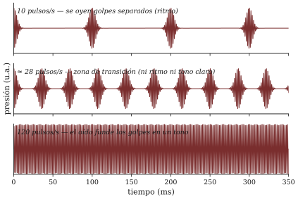

Sesión 01 · Curso Acústica Musical UC Objetivos que cubre: OA3.1 (vocabulario de escucha y ciclo de diagnóstico), OA1.1 (vibración y frecuencia, introducción), OA2.1 (frecuencia vs. altura, introducción).
Golpee la mesa una vez con el nudillo. Eso que oyó tiene casi todo lo que estudia este curso: algo se deformó, vibró, empujó el aire, el aire empujó su tímpano y su cerebro decidió que eso fue “un golpe seco en madera”. Hay física, hay fisiología y hay interpretación. Pero nadie lo llamaría una nota: no tiene altura, no se puede cantar, no se puede afinar.
Ahora golpee la mesa muchas veces por segundo — no lo va a lograr con la mano, pero una tarjeta contra los dientes de un peine, o el borde de una regla firme en la mesa, lo hacen por usted. En algún punto, cuando los golpes se vuelven suficientemente seguidos, ocurre algo notable: usted deja de oír muchos golpes y empieza a oír una nota. Ese tránsito — de la secuencia de eventos al tono sostenido — es la puerta de entrada del curso, y es un experimento que usted mismo hizo en la sesión.

La observación central es esta: un tono es una vibración que se repite lo bastante rápido como para que el oído renuncie a contar los eventos y los funda en una sola sensación con altura. Benade (1990, cap. 2) construye toda la entrada a la acústica musical desde esta idea, y este curso lo sigue: antes de hablar de ondas, espectros o instrumentos, conviene haber oído dónde termina el ritmo y dónde empieza el tono.
Para hablar de “qué tan seguido” ocurre algo repetitivo, la física usa dos números que son el mismo dato mirado desde ambos lados:
Si algo se repite 100 veces por segundo, cada repetición dura un centésimo de segundo:
Esa es toda la matemática de esta sesión, y no es poca: con ella usted ya puede razonar en proporciones. ¿La cuerda vibra el doble de rápido? Entonces cada ciclo dura la mitad. Ese estilo de razonamiento — el doble, la mitad, tres veces — va a ser la herramienta matemática dominante del semestre, mucho más que cualquier fórmula.
Dos referencias para calibrar la intuición: el La con que afina una orquesta (La4) es una vibración de 440 Hz — cuatrocientas cuarenta idas y vueltas por segundo —, y el rango que un oído humano joven y sano alcanza a percibir como sonido va aproximadamente de 20 Hz a 20 000 Hz (C&G, cap. 2; ROS, cap. 5). No es casualidad que el límite inferior coincida con la zona donde el peine y la regla dejan de sonar a ritmo y empiezan a sonar a nota: por debajo de unos 20 eventos por segundo el oído todavía puede seguirlos como sucesos individuales.
Recuadro opcional (para quienes vienen de ingeniería). La frontera ritmo–tono no es un umbral abrupto ni universal: depende del timbre del pulso, del nivel y del oyente, y en la zona de 15–30 Hz conviven la sensación de pulsación y una altura incipiente. En el taller lo midió usted mismo: trate su valor como una zona, no como una constante física. Compare con la discusión de Benade (1990, sec. 2.2–2.3).
En el taller, dos personas del mismo grupo encontraron umbrales distintos con el mismo sonido. Eso no es un error de medición: es la primera aparición del tema que atraviesa todo el curso. La frecuencia es una propiedad del sonido — se mide con un instrumento y da lo mismo quién escuche. La altura (qué tan “aguda” o “grave” oímos una nota) es una propiedad de la experiencia — ocurre en un sistema auditivo concreto, y su relación con la frecuencia es sistemática pero no trivial: duplicar la frecuencia no “duplica” la altura, la sube una octava, que es otra cosa (lo mediremos en las sesiones 5 y 6).
Por eso el curso insiste en un vocabulario disciplinado: frecuencia, intensidad y espectro son palabras del mundo físico; altura, sonoridad y timbre son palabras del mundo perceptual. Usarlas sin mezclarlas es la primera exigencia de la rúbrica de escucha (dimensión D1) y, más profundamente, es lo que permite formular preguntas que se pueden responder midiendo (Roederer 1997, cap. 1, organiza el campo exactamente con esta distinción).
La “escucha del día” que abre cada sesión desde la próxima semana sigue siempre el mismo protocolo de tres pasos, que es la versión auditiva del método experimental:
Note que el paso 1 sin el 2 es descripción sin comprensión, y el 2 sin el 3 es opinión. La rúbrica del curso (metodología, sección 5) califica las tres cosas por separado más una cuarta: la honestidad de distinguir lo que usted oye de lo que usted interpreta. En la línea base de hoy nadie tenía aún las herramientas — esa es exactamente la gracia: guardamos esas hojas y las volveremos a mirar al final del semestre.
El taller de la regla dejó instalado el otro rito permanente: predicción → experimento → explicación. Antes de acortar la parte libre de la regla, cada grupo escribió qué esperaba que pasara con el sonido. Después lo hizo. Después explicó la diferencia entre lo escrito y lo oído.
La predicción escrita no es burocracia: es lo que convierte un juego en un experimento. Sin predicción previa, cualquier resultado “tiene sentido” a posteriori y no se aprende nada del error. Con predicción, la discrepancia se vuelve información — y en este curso la discrepancia vale nota tanto como el acierto, en el taller y en el proyecto final.
Quedó una pregunta escrita en su ticket de salida: ¿cómo se vería un golpe, o un tren de golpes, si pudiéramos dibujarlo? La próxima sesión convierte el sonido en imagen — forma de onda, espectro, espectrograma — y esas imágenes serán los anteojos con que miraremos todo lo que suene de aquí a diciembre. Traiga su celular con la app de espectrograma instalada (instrucciones en la guía).